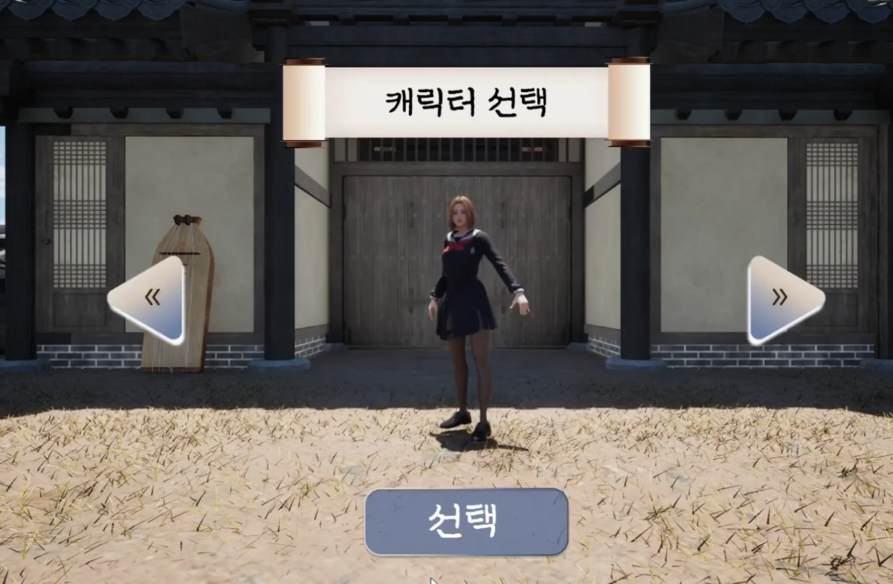
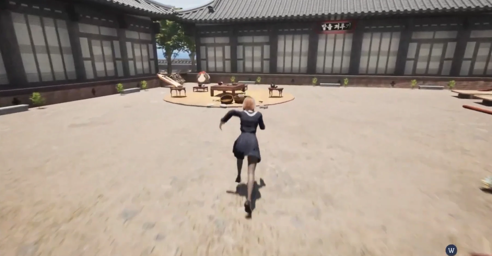
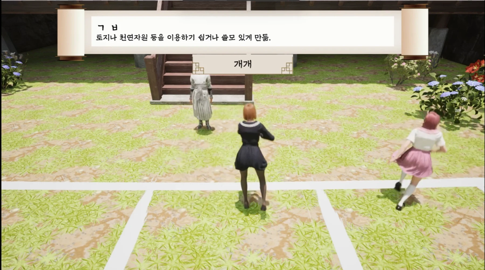

프로젝트 세종대왕
한옥 마을에서 여럿이 모여 노는 멀티플레이 미니게임 모음입니다.
방을 만들고 찾아 들어가는 세션 기능과 달리기 미니게임을 맡았습니다.
- 장르
- 멀티플레이 미니게임
- 엔진 · 언어
- Unreal Engine 5 · C++ · Blueprint
- 규모
- 5인 팀(프로그래머 3인 , 아트 2인)
- 담당
- 세션 · 트래블 · 로비 UI · 캐릭터 선택 · 달리기 게임
어떤 게임인가
플레이어가 로비에 접속한 후 달리기 초성 퀴즈 · 발음 대전 · OX퀴즈 세 종류의 맵 중 하나를 골라 멀티 플레이를 즐길 수 있습니다.
제 담당은 키를 연타하여 달리고 완주 순서대로 초성 퀴즈를 맞히는 미니게임과 세션 기능(방 만들기 · 찾기 · 들어가기)입니다.

세션 생성 · 검색 · 참가
개발 중에는 LAN으로, Steam 환경에서는 Steam 세션으로 동작합니다.
구현
- 세션을 다루는 창구(
IOnlineSessionInterface)를UJJH_GameInstance에 들고, 생성 · 검색 · 참가 · 파괴가 끝났을 때 불릴 함수(완료 델리게이트)를 미리 걸어 뒀습니다. 온라인 요청은 결과가 나중에 오므로 기다리는 대신 콜백으로 받습니다. Category,Room_Name,Host_Name, 최대 인원을 세션 설정값(방 목록에 같이 실려 나가는 값)으로 등록하고, 검색 결과에서 읽어 로비에 뿌릴roomInfo구조체로 옮겨 담습니다.- LAN이냐 Steam이냐는 지금 켜져 있는 온라인 서브시스템의 이름으로 판정합니다 -
bIsLANMatch = GetSubsystemName() == "NULL". 덕분에 같은 코드가 개발 중에는 LAN, Steam 빌드에서는 Steam 세션으로 돕니다.
화면


성과
맵 진입과 로비 복귀
구현
- 방을 만든 사람(호스트)은 세션 생성에 성공하면
ServerTravel로 자기 자신이 서버 역할까지 겸하는 listen server를 엽니다. 카테고리에 따라Run/Battle/Talk맵으로 갈립니다. - 들어가는 쪽은
JoinSession결과에서GetResolvedConnectString으로 실제 접속 주소를 받아ClientTravel로 그 주소에 접속합니다. - 방을 나가는 처리는 보내는 방향에 따라 셋으로 나눴습니다 —
서버 RPC(나 → 서버) · Multicast(서버 → 전원) · Client RPC(서버 → 한 명).
다만 이 셋을
GameInstance에 달아 실제로는 네트워크를 타지 못했습니다. 아래 트러블슈팅에 적었습니다.
화면

성과
로비 UI와 캐릭터 선택
방 만들기 · 방 찾기 · 캐릭터 선택을 한 위젯 안에서 전환합니다.
구현
- 화면을 따로 띄우지 않고
WidgetSwitcher로 방 만들기 · 방 찾기 · 캐릭터 선택을 전환합니다. - 슬라이더로 최대 인원을 움직이면 그 값이 세션을 만들 때 쓰는 값과 화면 글자에 동시에 반영됩니다.
- 검색이 끝나면 결과 배열을 받아 찾은 방 개수만큼 슬롯 위젯을 그 자리에서 만들어 목록에 넣습니다.
화면


성과
레벨을 넘어가도 유지되는 캐릭터
로비에서 고른 캐릭터가 달리기 맵까지, 그리고 다른 플레이어의 화면에도 그대로 따라옵니다.
구현
- 캐릭터 선택 위젯에서 고른 인덱스를
UJJH_GameInstance에 보관합니다.GameInstance는 게임이 끝날 때까지 살아남기에, 로비에서 고른 값이 달리기 맵까지 따라옵니다. - 새 맵에서 캐릭터가
BeginPlay할 때 자기 것만 서버 RPC(ServerChangeMesh)로 인덱스를 올려보냅니다. 서버는 그 값을 복제 프로퍼티 (서버가 바꾸면 전원에게 자동으로 퍼지는 변수)에 담고, Multicast로 모두에게 같은 외형을 입힙니다. - 남의 폰은 이미 복제돼 있는 인덱스를 읽어 그대로 적용합니다. 각자 자기 것만 보고하고 반영은 서버가 하므로, 누가 먼저 들어왔는지와 무관하게 같은 결과가 됩니다.
- 팀원이 만든 대전 맵도 같은
GameInstance값을 읽어 캐릭터를 적용합니다.
화면
// 레벨 이동 경계에서 무엇이 살아남는가 ServerTravel / ClientTravel 로비 레벨 ───────────────────┼───────────────────▶ 달리기 레벨 Pawn ✕ 새로 생성 Pawn PlayerController ✕ 새로 생성 PlayerController PlayerState ✕ 새로 생성 ← 첫 시도가 여기서 실패 GameInstance ● 그대로 유지 GameInstance └ CharacterMeshIndex 생존 // 새 맵에서 다시 입히는 순서 내 폰 BeginPlay └ 로컬 폰만 → ServerChangeMesh(GameInstance의 인덱스) └ 서버 → 복제 프로퍼티에 기록 → Multicast └ 전원 → CharacterList[인덱스]로 메시 교체 남의 폰 BeginPlay └ 이미 복제된 인덱스를 읽어 그대로 적용
GameInstance에 두면 남습니다.
GameInstance로 넘어갑니다.
BeginPlay에서 다시 입힌 결과입니다.성과
달리기 + 초성 퀴즈 게임
결승선에 들어온 순서가 그대로 정답을 맞힐 순서가 됩니다. 순위 시스템이 따로 없습니다.
구현
- 문제는
DataTable(엑셀 표처럼 생긴 데이터 시트)의 한 행 (단어 · 뜻 · 초성)을 무작위로 뽑아 Multicast로 전원에게 같은 문제를 내려보냅니다. 화면에는 뜻과 초성만 뜨고 정답 단어는 서버만 압니다. - 결승선 판정은 서버에서만 합니다. 결승선 액터의 오버랩을 서버가 받아 게임모드의 통과 순서 배열에 넣습니다. 이 배열이 곧 뒤의 정답 순서가 됩니다.
- 1등이 들어오면 나머지 화면에 5초 카운트다운이 뜨고, 끝나면 못 들어온 사람은 패배 모션과 함께 입력이 잠깁니다.
- 정답 차례는 통과 순서대로 넘어갑니다 — 오답이면 다음 순위로, 정답이면 전원 종료 화면.
- 차례가 아닌 사람은 입력자 시점으로 관전하고, 입력 중인 글자가 실시간으로 모두의 화면에 보입니다. 입력자의 텍스트를 서버로 올려 서버가 전원에게 다시 뿌리는 방식입니다.
화면
// 달린 순서가 그대로 정답 입력 순서가 된다 정원(3인) 도착 ──▶ 3초 뒤 문제 공개 (뜻 + 초성) ──▶ 입력 허가 1등 결승 통과 ─┬─ 나머지 전원 화면에 5초 카운트다운 └─ 승리 모션 카운트 종료 ─────▶ 못 들어온 사람: 패배 모션 · 입력 차단 정답 차례: 1등 ──오답──▶ 2등 ──오답──▶ 3등 ──오답──▶ 종료 │ 정답 ──▶ 전원 종료 위젯 차례가 아닌 사람: 입력자 시점으로 관전 + 입력 중인 글자를 그대로 봄

성과
트러블슈팅
막혔던 지점을 문제 · 원인 · 해결 순으로 적었습니다.
어려움
기능 01 — 세션 생성 · 검색 · 참가
- 문제
- 한글로 지은 방 이름이 Steam 세션에서 제대로 들어오지 않았습니다. 로컬 LAN에서는 멀쩡한데 Steam을 거치면 검색 결과의 방 이름이 깨졌습니다.
- 원인
- 세션 광고 설정값은 Steam 서버를 거쳐 저장·전달됩니다. 그 경로에서 비ASCII 문자열이 안정적으로 보존된다는 보장이 없습니다.
- 해결
- 방 이름을 Base64로 인코딩해 등록하고, 검색 결과를 표시할 때 디코딩하도록 바꿨습니다. 광고값에는 항상 ASCII만 올라가므로 경로와 무관하게 같은 문자열이 돌아옵니다.
어려움
기능 02 — 맵 진입과 로비 복귀
- 문제
- 호스트가 방을 나가면 남은 사람에게 아무 통보도 가지 않았습니다. 나가는 본인은 로비로 잘 돌아오는데, 남은 사람들은 통보를 받는 게 아니라 연결이 끊겨 튕겼습니다.
- 원인
- 세 RPC를
UJJH_GameInstance에 달았기 때문입니다. RPC는 액터에서만 네트워크를 탑니다. 액터는Owner를 타고PlayerController→NetConnection에 닿아 보낼 주소를 알고,NetGUID로 받는 쪽에서 같은 객체를 특정할 수 있습니다.GameInstance는 둘 다 없어Server·Client·NetMulticast표시가 무시되고 세 함수 모두 부른 자리에서 로컬 실행됩니다. - 해결
- RPC를
GameInstance에서 PlayerController로 옮기면 됩니다 — PC는 액터이고 각 플레이어와 1:1로 이어진 커넥션을 가지므로, 세 갈래로 나눈 설계는 그대로 두고 놓인 위치만 바꾸면 의도대로 동작합니다.
어려움
기능 02 — JoinSession 성공과 맵 진입은 다른 사건
- 문제
- 연결이 끊긴 클라이언트가 아무 화면에도 속하지 못한 채 남았습니다. 맵은 이미 죽었는데 로비로도 돌아오지 못했습니다.
- 원인
JoinSession성공을 “맵에 들어간 것”과 같은 사건으로 다뤘기 때문입니다. 참가 성공은 세션에 자리를 잡고 접속 주소를 알아냈다는 뜻이고, 맵 진입은 그 주소로 접속해 맵이 열렸고 연결이 살아 있다는 뜻입니다. 둘은 다른 계층의 사건입니다. 그런데 성공 콜백(OnMyJoinSessionComplete)에서 곧바로ClientTravel을 걸고 끝내, 그 뒤에 연결이 끊기는 것을 받을 자리가 없었습니다. 세션 쪽에서는 여전히 참가 중인데 커넥션만 죽은 상태가 됩니다.- 해결
- 두 계층의 실패를 받는 자리를 나눴습니다.
참가 성공 → 트래블은 세션 완료 델리게이트가, 연결 상실 → 로비 복귀는
OnNetworkFailure가 맡습니다. 위의 RPC 문제로 통보가 가지 않아도, 연결이 끊긴 것 자체를 감지해 클라이언트를 로비로 되돌립니다.
어려움
기능 04 — 레벨을 넘어가도 유지되는 캐릭터
- 문제
- 로비에서 고른 캐릭터가 맵으로 넘어가면 기본 캐릭터로 돌아왔습니다. 게다가 내 화면에서만 맞게 보이고 다른 플레이어의 화면에서는 다른 캐릭터로 보이는 경우도 있었습니다.
- 원인
- 선택값을 폰과
PlayerState에 담아뒀기 때문입니다. 트래블은 레벨을 다시 여는 것이라 그 둘도 새로 만들어져 이전 레벨에서의 값을 보관할 수 없었습니다. - 해결
- 보관은 트래블을 넘겨도 유지되는
GameInstance에, 반영은 서버를 거쳐 전원에게로 나눴습니다.
범위와 한계
5인 팀(프로그래머 3 · 아트 2) 프로젝트이고, 이 페이지에 적은 것은
세션 · 맵 이동 · 로비 UI · 캐릭터 유지 · 달리기 미니게임까지 제가 맡은 구간입니다.
대전 맵과 아트 리소스는 팀원 작업이며, 대전 맵은 제가 만든
GameInstance 캐릭터 값을 그대로 읽어 씁니다.
이 당시에 GameInstance와 PlayerController의 개념을 잘 알지 못해서 이런 트러블슈팅이 발생한 것이 아쉬웠습니다.